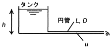

令和元年度（再試験） 問34 化学プロセス
大気開放タンクに一定深さh＝0.34 mで水が入っている。タンク底に長さL＝1 m、管内径D＝3 mmの円管を水平に接続し、大気中に水を流出させたとき、管内の平均流速u［m/s］として最も近い値はどれか？管入口出口間の圧力損失は、ΔP=4f (ρu2/2)(L/D)で計算され、これがタンク底の静水圧に等しい。ただし、管摩擦係数f＝0.005、水の密度ρ＝1,000 kg/m3、重力加速度g＝9.8 m2/sとする。

ベルヌーイの定理より、理想流体では位置エネルギーや圧力エネルギー、速度エネルギーの和が一定になることを利用します。つまりタンク液面部とタンク底部のエネルギ－は一定であると考えられます。
ベルヌーイの定理（圧力換算）［Pa］$$\rho gz+P+\frac{ \rho \ u^2\ }{2}=一定$$ρ：密度［kg/m3］、g：重力加速度［m/s2］、z：高さ［m］
P：圧力［Pa］、u：速度［m/s］
大気開放タンクのため圧力エネルギーは両位置においても大気圧がかかっており一定です。タンク液面部においてはタンク径が十分に大きく、タンク底から液が出る時に液面高さが変わらないとすると、速度エネルギーはゼロとみなせます。タンク底部においては高さがゼロであるため位置エネルギーがゼロとなります。よって理想流体においては、タンク液面の位置エネルギー（ρgh）はタンク底部の速度エネルギー（ρu2/2）に全て変換されます。更にここから流れによる損失を加味して計算します。
配管内を流体が流れる時、摩擦によるエネルギー損失が発生します。その時のエネルギー損失量を圧力で表した値が圧力損失です。問題では静水圧（タンク液面の位置エネルギー）と圧力損失が等しくなるとあります。圧力損失は問題に記載されているΔP=4f (ρu2/2)(L/D)を用います。
ρgh＝4f (ρu2/2)(L/D)
gh=4f (u2/2)(L/D)
9.8×0.34＝4×0.005×(u2/2)×(1/0.003)
上記方程式を解くと、管内の平均流速uは1.0 m/sです。